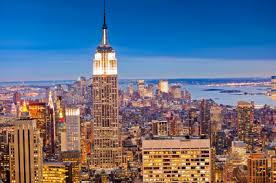
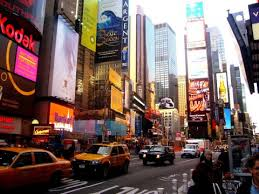
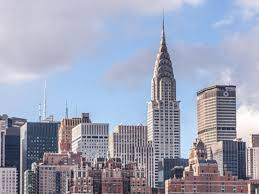
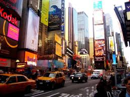
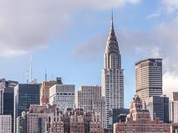

New York is a state in the northeastern United States. New York was one of the original thirteen colonies that formed the United States. With an estimated 19.8 million residents in 2015, it is the fourth most populous state in the United States. To differentiate from its city with the same name, it is sometimes called New York State. The state's largest city, New York City, makes up over 40% of the state's population. Two-thirds of the state's population lives in the New York metropolitan area, and nearly 40% lives on Long Island. The state and city were both named for the 17th-century Duke of York, future King James II of England. With an estimated population of 8.55 million in 2015, New York City is the most populous city in the United States.

 


